School sign-in
School identity, readable form, English / Marathi switch.
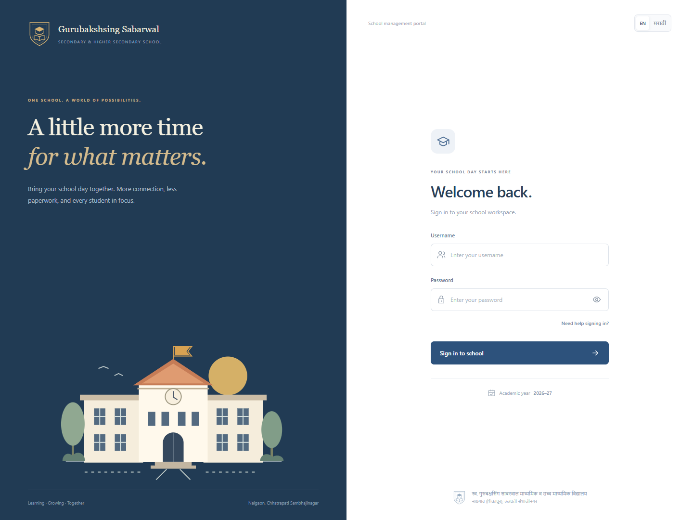
School overview
Live school totals, recorded attendance, class overview and academic calendar.
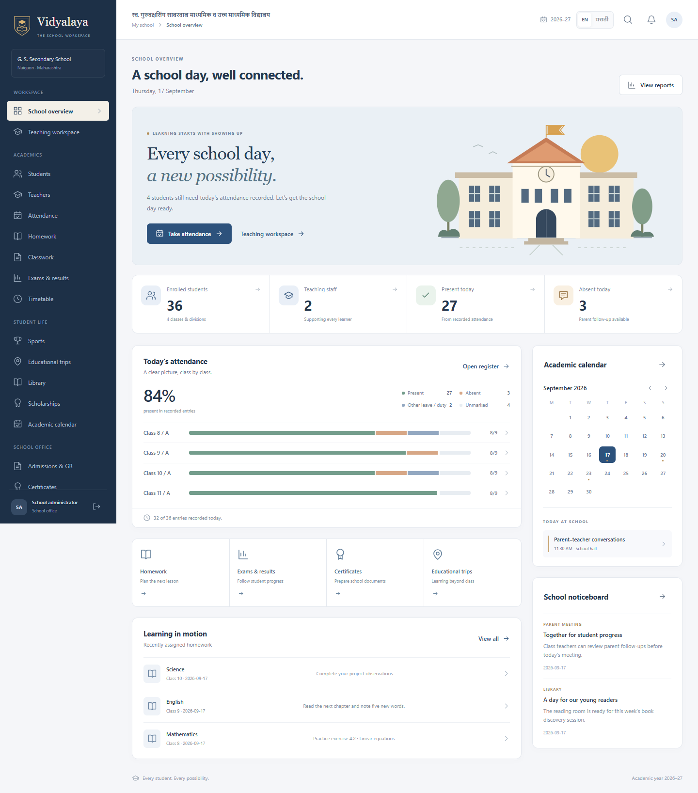
Student directory
Find students first; add and import from focused actions.
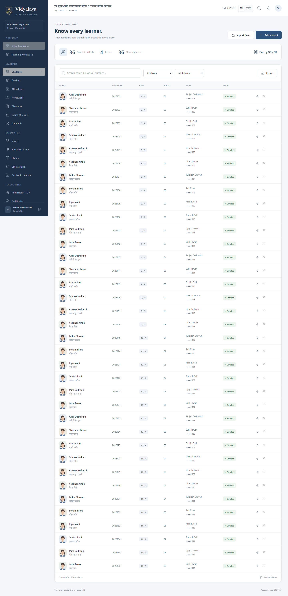
Student quick profile
Bilingual identity, guardian contacts, history and an opaque student QR.
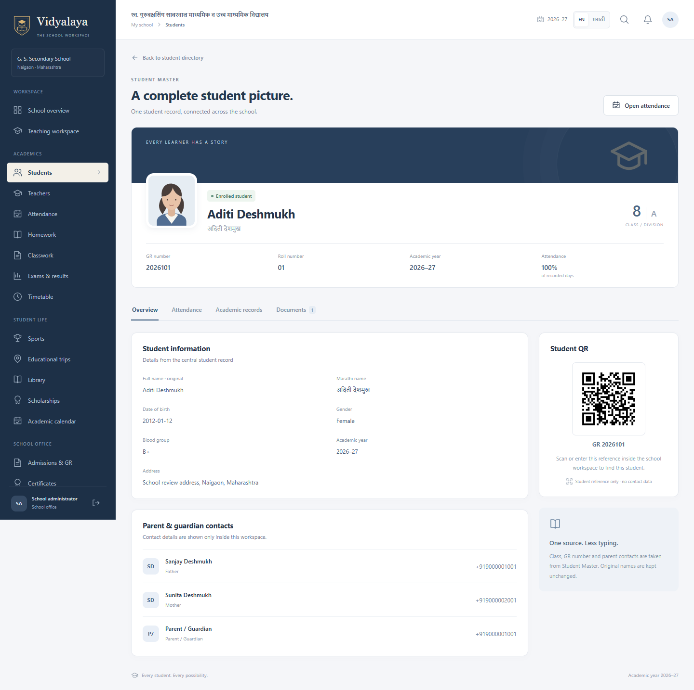
Class attendance
Class register, present/absent controls and immediate parent contact.
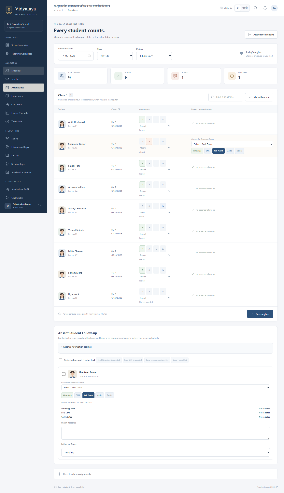
Teaching workspace
Administrator preview of assigned classes, parent follow-ups and lesson actions.
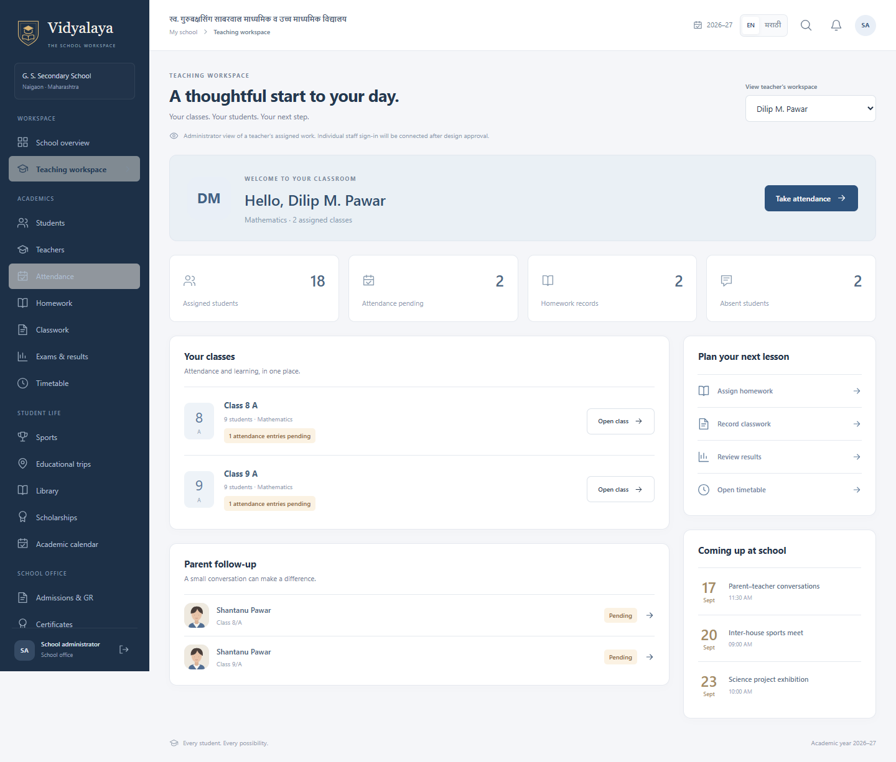
मराठी शालेय आढावा
Core presentation switches languages without rewriting student data.
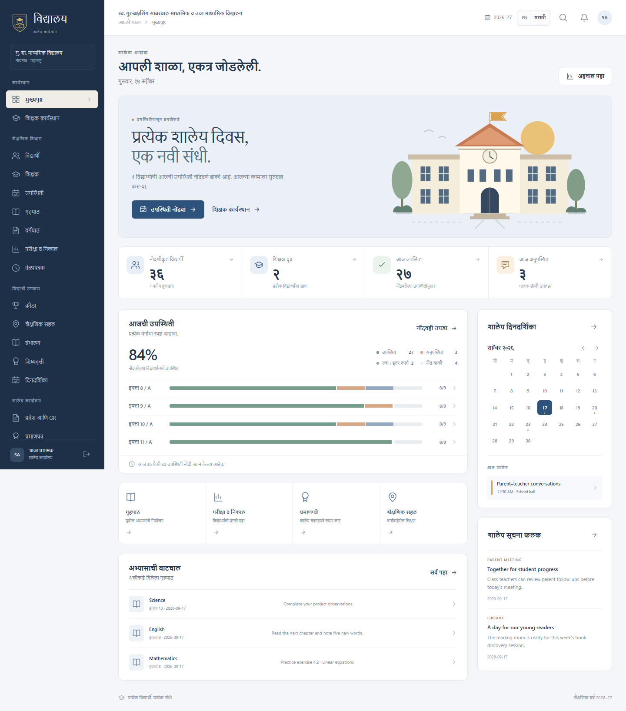
Mobile school overview
Teacher-friendly bottom navigation and a compact daily overview.
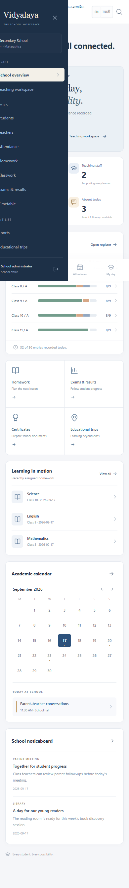
Mobile attendance
Student cards and large contact controls, without sideways scrolling.
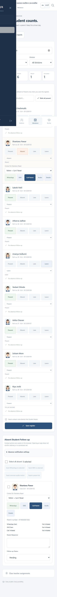
Mobile teaching workspace
Assigned work and follow-ups on a phone.
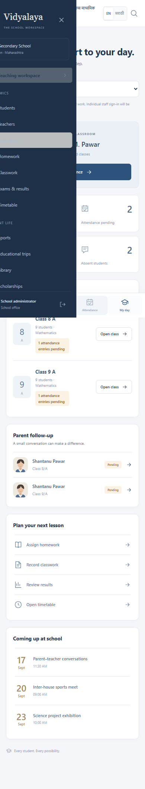
Mobile student profile
Student identity, profile sections and parent contacts.
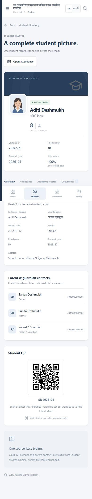
Mobile navigation
Grouped school navigation with focus containment and Escape dismissal.
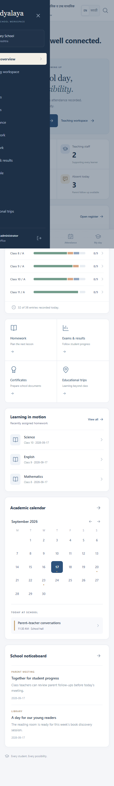
Mobile sign-in
The same school identity on a phone.
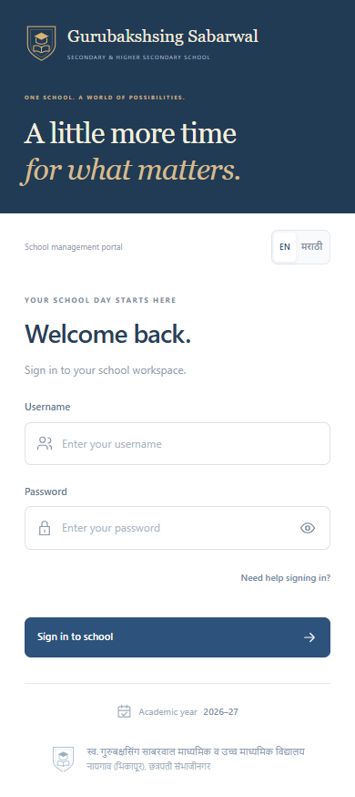